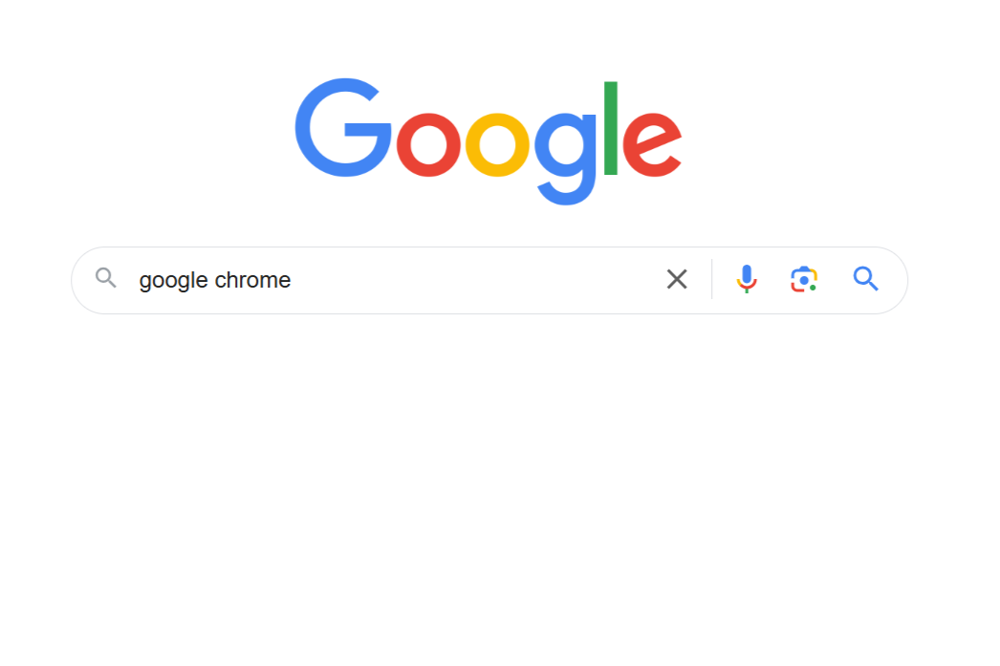
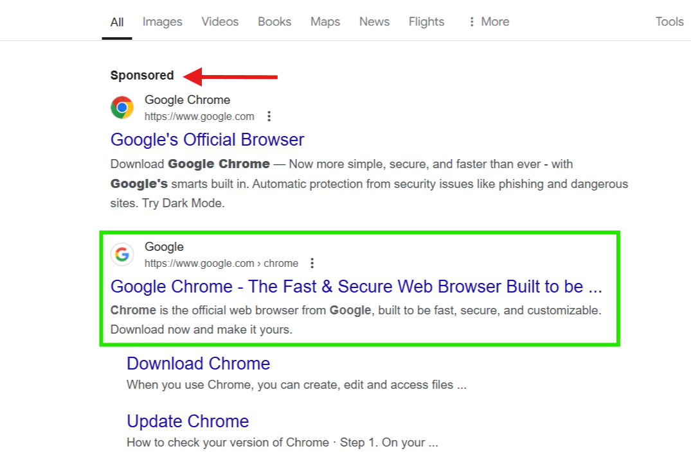
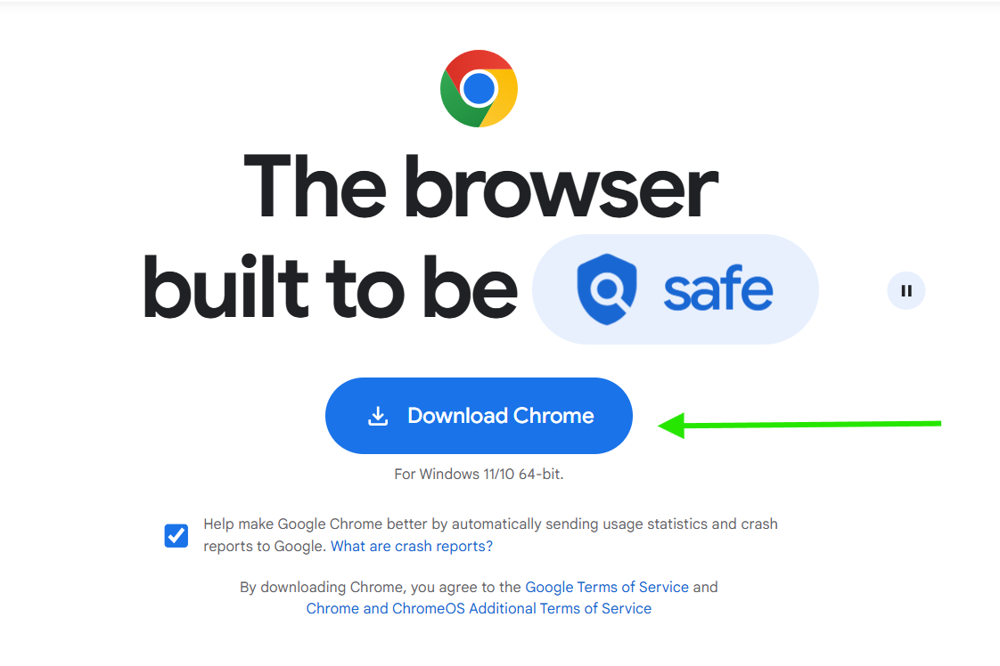
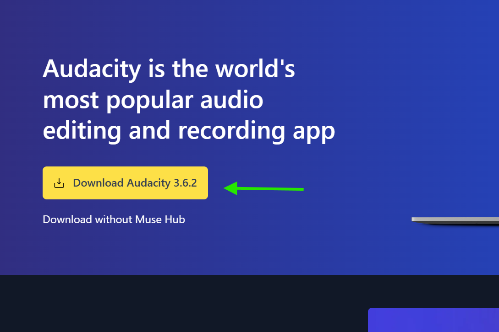
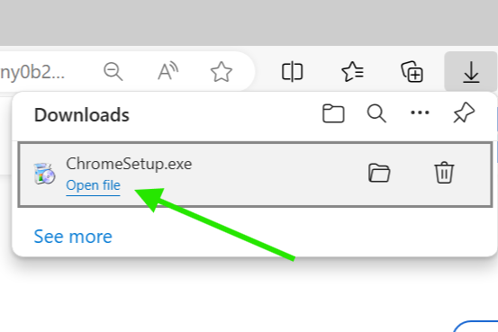
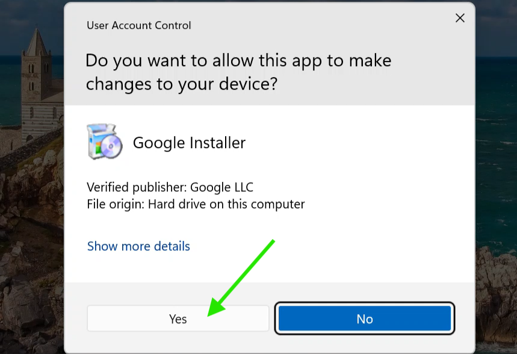
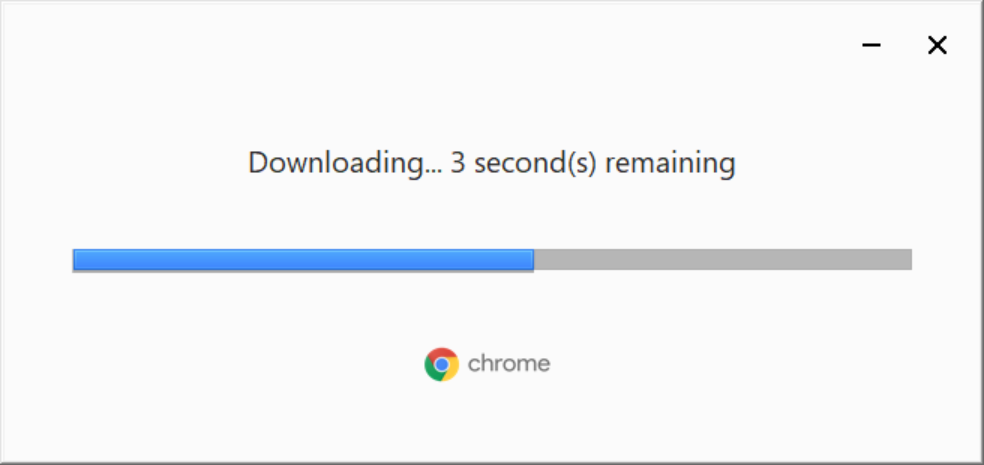
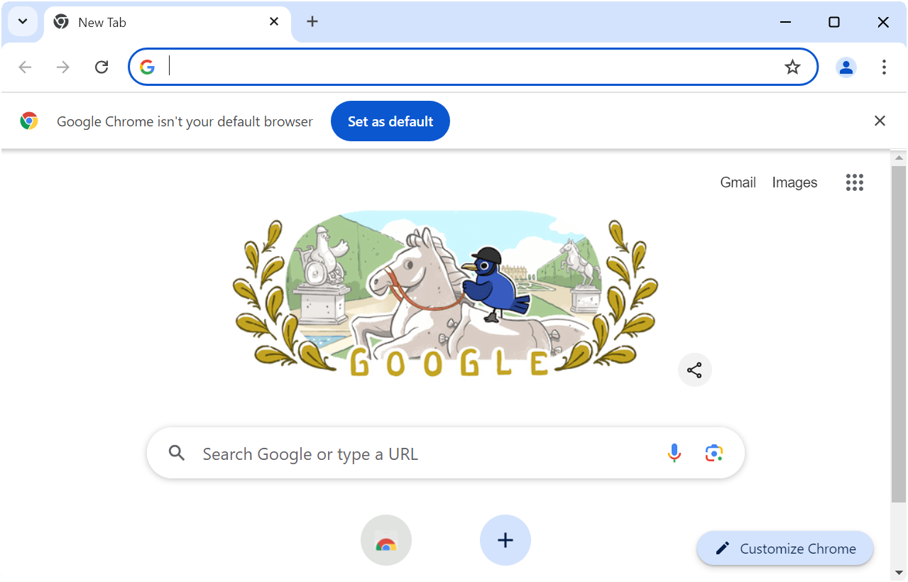

If you do not know ho to install a program from the internet you'd really like to have or you have to download for work or school, you are right here, i'll explain step by step how to install from the internet.
First, go to google.com Then enter the name of the program you're looking for.

On the results page, the correct result most often is the very first entry after the sponsored section (avoid sponsored results if possible), if you are still suspicious, you can add "official" to your search. Then click on that website

On The website you want to find the download section. Most often it's advertised quite big, if not, try looking at the top of the screen.


Nowadays programs can't be installed directly, instead you will have to first download a installer which then will install the program. After you pressed download said installer will be downloaded. When finished you will be presented with a menu, there you want to press the open file button. If you get a are you sure message, press install anyway or keep anyway. If you're really not sure if you found the right installer, I'd reccomend to trust your gut, if you descide that you won't install it, reach out to somebody in your surroundings and ask them.

Most of the times you will have to give the installer additional permissions, you will automatically promted to do this after you opened the installer, press yes here.

Depending on what program you are trying to install, the program will now be installed or you will have to set up further things, if you are promted to customise the installation, just go with the preset, it will (in most cases) fit you the best.

You should now be set up and the programm should start. If you have any further questions feel free to reach out. If this guide helped you, please reccomend it to other people who might need help, or check out my other guides here.
